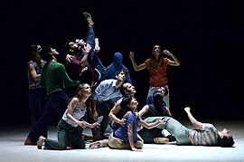

Coreografía (literalmente "escritura de la danza", también llamada composición de la danza). De las palabras griegas "χορεία" (danza circular, corea) y "γραφή" (escritura). Es el arte de crear estructuras en las que suceden movimientos; el término composición también puede referirse a la navegación o conexión de estas estructuras de movimientos. La estructura de movimientos resultante también puede ser considerada como la coreografía. Las personas que crean la coreografía son llamados coreógrafos.
Los elementos (movimientos) y características específicas de una danza, se utilizan para elaborar una coreografía, y a partir de ellos pueden inventarse nuevos movimientos para crear nuevas coreografías. La coreografía también es utilizada en situaciones especiales, como en la cinematografía, el teatro, musicales, conciertos, performances, eventos y presentaciones artísticas.
Elementos que conforman a la danza

La danza se compone de diversos elementos básicos que se interrelacionan, logrando transmitir emociones al público y para el mismo bailarín.
Movimiento corporal
Ritmo
Expresión corporal
Expresión facial
Espacio
Estilo
El uso predominante de uno u otro elemento no es siempre parejo; en ciertos bailes predomina el ritmo, en otros el uso del espacio, en otros el estilo, etc. Es importante destacar que de acuerdo al tipo y género de baile se acentuará el uso de uno u otro elemento. Dentro del baile se van creando nuevos géneros y variantes al crear nuevas coreografías y de esta forma se van diversificando.
Cuando la danza se manifiesta con una intención determinada, diferente a lo que es el puro bailar o como el equilibrio estético que es el ballet clásico, se puede complementar con lo que se puede denominar «adicionales no danzantes». Estos son: mímica, gesto simbólico, canto y palabra.